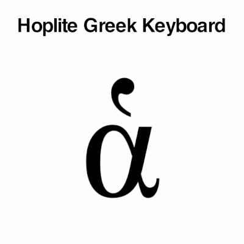

Hoplite Polytonic Greek Keyboard

The Hoplite Polytonic Greek Keyboard facilitates the typing of polytonic Greek diacritics.
- On iOS and Android, the Hoplite Keyboard can be installed as an alternate keyboard system-wide and used in any application.
- On Mac, Windows, and Linux the Hoplite Keyboard can be used as a LibreOffice extension: type base letters with the Greek keyboard provided by your operating system and toggle on/off diacritics with the Hoplite Keyboard's hot keys.
Demonstration:
- Type a Greek vowel
- Then toggle diacritics on and off with the number keys
- Contrasting diacritics will replace each other
| rough | smooth | acute | grave | circumflex | macron | breve | iota subscript | diaeresis | underdot |
Available for:
Features:
- One key per diacritic
- Add diacritics after typing the vowel
- Add diacritics in any order
- Toggle diacritics on/off
- Breathings, accents, subscripts, macrons, breves, diaereses: no problem!*
- Choose precomposed, precomposed with private use area, or combining-only Unicode modes.
* as long as your font supports it.
For best results, use a polytonic Greek font such as:
Unicode:
All three Hoplite Keyboards allow you to choose among three Unicode modes:
- Precomposed mode uses precomposed characters when possible, falling back to combining diacritics for combinations where a precomposed character does not exist in the Unicode standard.
- Precomposed with PUA (Private Use Area) mode is the same, but also uses the precomposed characters from the non-standard Private Use Area. These characters are not standard Unicode, but are supported by some fonts such as New Athena Unicode and IFAOGrec Unicode.
- Combining-only mode uses combining diacritics to type decomposed characters. Few fonts handle combining diacritics well at this point; New Athena Unicode is currently the best.
Read more about the differences here.
Support:
Send questions and comments to: jeremy.w.march @ gmail.com
Developers:
The source code for these keyboards is Free Software and can be found on Github.